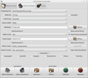
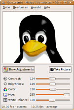
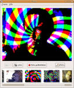

Webcam
Ausbaufähige Anleitung
Dieser Anleitung fehlen noch einige Informationen. Wenn Du etwas verbessern kannst, dann editiere den Beitrag, um die Qualität des Wikis noch weiter zu verbessern.
Anmerkung: Viele Hinweise zur manuellen Installation beziehen sich noch auf ältere Ubuntu-Versionen. Daher sollte zuerst geprüft werden, ob die Webcam inzwischen automatisch unterstützt wird. Bei Problemen mit Skype hilft beispielsweise u.U. der Tipp unter V4L2-Kompatibilität.
Zum Verständnis dieses Artikels sind folgende Seiten hilfreich:
Für Linux gibt es eine ganze Reihe von Webcams, die gut unterstützt werden. Fast immer handelt es sich jedoch nicht um eine offizielle Unterstützung durch den (Chipsatz-)Hersteller, sondern verschiedene Open Source-Projekte haben einen Treiber für einen bestimmten Chipsatz entwickelt. Leider wechseln manche Webcam-Hersteller ihre Chipsätze ab und zu, so dass nicht alle Webcams, die denselben Herstellernamen tragen, mit demselben Treiber funktionieren. Es gibt aber auch immer noch Chipsatz-Hersteller, die die Entwicklung eines Open Source-Treibers blockieren. Diese Webcams sind auf der Hardware blacklist zu finden.
Daneben gibt es auf Anwendungsseite zwei Frameworks: v4l (Video for Linux) und das neuere v4l2. Programme, die nur das ältere v4l unterstützen (z.B. Skype) müssen dazu mit einem speziellen Parameter gestartet werden (siehe V4L2-Kompatibilität).
Diese Anleitung beschreibt verschiedene Wege, den passenden Treiber selbst zu installieren, falls die Webcam nicht automatisch gefunden und unterstützt wird.
Kernelunterstützung¶
Es wurden verschiedene Webcam-Treiber rund um v4l2 in die Kernel-Pakete aufgenommen: Neben dem gspca- wurde auch der uvcvideo-Treiber  integriert. Damit werden viele Webcams automatisch unterstützt.
integriert. Damit werden viele Webcams automatisch unterstützt.
Welche Treiber bei einer automatischen Erkennung verwendet werden, wird ersichtlich, wenn vor dem Anstecken der Webcam im Terminal der Befehl:
tail -f /var/log/syslog
angegeben wird und dann die Webcam an den USB-Port angesteckt wird. Die dann neuen Einträge beziehen sich dann auf die Webcam.
Webcam identifizieren¶
Um den passenden Treiber zu ermitteln, ist es wichtig, die Webcam vorab genau zu identifizieren. Dazu steckt man die Webcam einfach in den USB-Port des Rechners (entfällt bei integrierten Webcams) und ruft in einem Terminal [6] den Befehl:
lsusb
auf. Dieser Befehl liefert Informationen über die angeschlossenen USB-Geräte, u.a. auch die Hersteller- (engl. Vendor) und die Produkt-ID, die eine eindeutige Identifizierung ermöglichen. Wer es ganz genau wissen möchte, hängt dem Befehl einfach noch den Parameter -v an.
~$ lsusb ... Bus 003 Device 002: ID 093a:2460 Pixart Imaging, Inc. Q-TEC WEBCAM 100 ...
Hier lautet die Hersteller-ID 093a und die Produkt-ID 2460.
Mit den so gefundenen Informationen durchsucht man anschließend die Listen der unterstützten Webcams:
| Listen für unterstützte Webcam (nach Treibern) | ||
| Treiber | Hersteller | Links |
| uvcvideo | Standard-Treiber, Creative, Logitech, Fujifilm und andere | offizieller Link |
| gspca | Agfa, Aiptek, Kodak, Mustek und vielen anderen | Kernel-Dokumentation; LinuxTV Wiki |
| gspca V1 | ältere und nicht offiziell unterstützte Modelle | http://mxhaard.free.fr/spca5xx.html |
| ov511 | Creative, D-Link, Microsoft, Sony und vielen andere | ovcam.org |
| pwc | Phillips, Logitech, Creative und anderen | Link |
| qc-usb-messenger | einige Logitech-Webcams | Link |
| sqcam | Mitek, Argos und andere | Link |
| zr364 | Aiptek PocketDV 3300 im Webcam-Modus | Link |
| r5u87x | ältere Laptop-Webcams (v.a. Sony Vaio) mit Ricoh R5U87X chip (UVC) | Link |
Easycam2¶
Sofern die Webcam nicht bereits durch den Kernel unterstützt wird (siehe Abschnitt zuvor), kann in den meisten Fällen einfach die Treiber-Sammlung Archiv/Easycam2 genommen werden. Der Vorteil ist, dass sie sich sehr einfach installieren lässt und dass eine Vielzahl von Webcams unterstützt werden. Eine Übersicht der unterstützten Webcams liefern die Links in der Kompatibilitätsliste.
Manuelle Installation¶
Hat man den benötigten Treiber ermittelt, kann mit der Installation begonnen werden. Bei der manuellen Installation sollte aber bedacht werden, dass es sich bei diesen Treibern um Kernelmodule handelt. Praktisch heißt das, dass bei jedem Update des Kernels auch die Kernelmodule neu übersetzt werden müssen. Um diese Problematik zu lösen, wurde DKMS entwickelt.
Aus Ubuntu-Quellen¶
In den Ubuntu-Paketquellen werden verschiedene Treiber bereitgestellt, allerdings nur im Quellcode. Die Installation des Treibers erfordert es also, den Quellcode zunächst in einen lauffähigen Binärcode zu übersetzen, was mit den von Ubuntu bereitgestellten Werkzeugen jedoch recht einfach zu machen ist. Folgende Treiber stehen in den Ubuntu-Quellen zur Verfügung [1]:
ov51x-jpeg-source (universe )
qc-usb-source (universe )
 mit apturl
mit apturl
Paketliste zum Kopieren:
sudo apt-get install ov51x-jpeg-source qc-usb-source
sudo aptitude install ov51x-jpeg-source qc-usb-source
Zunächst muss das Paket mit dem Quellcode des passenden Treibers installiert werden. Aufgrund der Abhängigkeiten werden dabei automatisch der Modul-Assistent, sowie das Paket debhelper, mit deren Hilfe sich der Quellcode recht komfortabel übersetzen lässt, mit installiert.
Danach wird durch Ausführung der Befehle
sudo m-a prepare sudo m-a a-i <TREIBER>
der Binärcode erstellt [2] [3]. In der letzten Befehlszeile muss <TREIBER> entsprechend dem tatsächlichen Treibernamen (bspw. qc_usb) abgeändert werden. Mit dem ersten Befehl wird zunächst geprüft, ob alle zum Übersetzen des Quellcodes erforderlichen Pakete installiert sind (nicht vorhandene Pakete werden ggf. nachinstalliert), und mit dem zweiten Befehl wird der Quellcode dann übersetzt. Danach sollte man die Modulabhängigkeiten mit dem Befehl:
sudo depmod -a
generieren lassen.
Danach muss der Treiber <TREIBER> (ist entsprechend anzupassen) nur noch mit dem Befehl:
sudo modprobe <TREIBER>
als Kernelmodule geladen werden (vgl. Kernelmodule).
Ob der Treiber korrekt installiert wurde, lässt sich anschließend mit dem Befehl:
modinfo <TREIBER>
prüfen. Damit werden u.a. auch nochmal alle durch den installierten Treiber unterstützten Webcams mit Hersteller- und Produkt-ID aufgelistet.
Aus Original-Quellcode¶
Die Installation eines Treibers aus dem Original-Quellcode, d.h. durch Bezug des Quellcodes direkt von der Entwicklerseite ist nur in Ausnahmefällen notwendig, d.h. wenn weder die Installation mittels Easycam2 noch die Installation aus den Ubuntu-Quellen erfolgreich waren oder wenn die Webcam durch diese Treiber (noch) nicht unterstützt wird. Entsprechend werden hier auch nur einige Treiber behandelt. Weitere Infos zur Installation aus dem Original-Quellcode finden sich im englischsprachigen Ubuntu-Wiki (Abschnitt "Manual installation instructions"). Wer Bedarf sieht, kann dieses Kapitel gerne um weitere Treiber ergänzen.
Voraussetzung¶
Um die Treiber aus dem Originalcode übersetzen und installieren zu können, müssen vorab folgende Pakete aus den Ubuntu-Quellen installiert werden:
linux-headers-<version>
linux-restricted-modules-<version> (restricted)
build-essential
mit apturl
Paketliste zum Kopieren:
sudo apt-get install linux-headers-<version> linux-restricted-modules-<version> build-essential
sudo aptitude install linux-headers-<version> linux-restricted-modules-<version> build-essential
Der Ausdruck <version> in den Paketnamen bezeichnet die Versionsnummer des aktuell installierten Kernels, die sich mit dem Befehl
uname -r
bestimmen lässt.
gspca¶
Der Treiber "gspca" ist bereits seit einigen Versionen über die v4l2-Schnittstelle in den Linux-Kernel integriert und wird damit auch mit den Kernel-Versionen mitgepflegt. Dieser Treiber besteht aus zwei verschiedenen Teilen, der "gspca_main" Haupt-Treiber und die hardwarespezifischen Zusatz-Treiber "gspca_xxxx", die gemeinsam geladen werden müssen (siehe auch Kernel-Liste). Eine manuelle Übersetzung der gspca-Treiber aus dem Kernel ist üblicherweise nicht nötig.
Es gibt Versionen des "gspca"-Treibers, die auf der Vorgänger-Schnittstelle v4l (oder v4l1) basiert, diese werden von ihrem Entwickler hier  zum Download zur Verfügung gestellt. (Datei: gspcav1-<datum>.tar.gz). Leider wurden nicht alle Treiber von dieser ersten Version auf die nun im Kernel gepflegten Module portiert. Eine Installation speziell dieser Treiber ist nur dann notwendig, wenn die eingesetzte Webcam in der gspca-V1 Liste erscheint, aber nicht in der gspca-Kernel-Liste. Nach dem Download wird die Datei gspcav1-<datum>.tar.gz entpackt [4] und kann dann mit dem Terminalbefehl
zum Download zur Verfügung gestellt. (Datei: gspcav1-<datum>.tar.gz). Leider wurden nicht alle Treiber von dieser ersten Version auf die nun im Kernel gepflegten Module portiert. Eine Installation speziell dieser Treiber ist nur dann notwendig, wenn die eingesetzte Webcam in der gspca-V1 Liste erscheint, aber nicht in der gspca-Kernel-Liste. Nach dem Download wird die Datei gspcav1-<datum>.tar.gz entpackt [4] und kann dann mit dem Terminalbefehl
sudo ./gspca_build
übersetzt (kompiliert) und installiert werden. Siehe auch die Readme-Datei im Paket.
Hinweis!
Fremdsoftware kann das System gefährden.
ov51x-jpeg¶
Der Quellcode des ov51x-jpeg-Treibers kann von rastageeks.org heruntergeladen werden. Nach dem Herunterladen und Entpacken [4] des Archivs wechselt man in das dabei angelegte Verzeichnis und installiert den Treiber dann wie folgt:
make sudo make install sudo depmod -a sudo modprobe ov51x-jpeg
Diese Installation funktioniert ab Version 1.0.0.
Hinweis!
Fremdsoftware kann das System gefährden.
Microdia¶
Einige Low-Budget-Webcams benutzen Komponenten von Microdia. Darunter sind auch in Deutschland beliebte Modelle, die über Lidl und Aldi vertrieben wurden. Zur Zeit arbeitet eine Gruppe daran, einem Linux-kompatiblen Treiber zu entwickeln. Weitere Infos und eine Liste unterstützter Webcams gibt es hier .
Zum Übersetzen des Treibers müssen vorab die folgenden Pakete installiert werden [1]:
git-core
gitk
git-gui
git-doc
curl
mit apturl
Paketliste zum Kopieren:
sudo apt-get install git-core gitk git-gui git-doc curl
sudo aptitude install git-core gitk git-gui git-doc curl
Dann wird der Quellcode heruntergeladen:
git clone http://repo.or.cz/r/microdia.git
Hinweis!
Fremdsoftware kann das System gefährden.
Die Übersetzung wird mit:
cd microdia make
gestartet.
Beim Kompilieren taucht eventuell der Fehler
make: *** [driver] Error 127
auf. Dieser kann ohne Probleme ignoriert werden. Anschließend müssen noch einige Module geladen werden.
sudo modprobe videodev sudo modprobe compat-ioctl32 sudo insmod sn9c20x.ko
Wer das Modul nicht nach jedem Neustart neu laden möchte, sollte sich hiermit Abhilfe schaffen:
sudo cp sn9c20x.ko /lib/modules/`uname -r`/kernel/drivers/media/video/usbvideo/ sudo depmod -a
Hinweis:
Die Original-Anleitung zum Installieren findet man auf groups.google.com .
Sonderfälle¶
In diesem Abschnitt sind Spezialfälle aufgeführt, in denen die Installation mittels Easycam2 nicht erfolgreich war. Die Installation aus den Ubuntu-Quellen wurde allerdings noch nicht getestet.
Trust WB-1200p¶
Diese Kamera mit der USB-ID 093a:2468 lässt sich in bestimmten Fällen nur mit dem Modul "spca5xx" betreiben. Dieses Modul befindet sich aber nicht mehr in den offiziellen Paketquellen. Evtl. kann der Nachfolger "gspca" verwendet werden.
Genesys Logic USB2.0 PC Camera¶
Für diese Kameras mit den USB-IDs 05e3:0503 und 05e3:f191 gibt es keinen Linux-Treiber. Auf der Seite gl860 wird allerdings ein Kernelmodul entwickelt, womit man die zwei Webcams zum Laufen bekommt. Dabei ist die Unterstützung für die Version 05e3:f191 komplett, für die Version 05e3:0503 bisher nur im Alphastadium. Wer es aber dennoch wissen will, lädt sich dort das Archiv runter und folgt den Installationsanweisungen.
Webcams mit Sunplus Treiber¶
Einige Webcams funktionieren nach dem Anschluss nicht, obwohl der Treiber verfügbar ist. Im Systemprotokoll finden sich beim Anschließen möglicherweise folgende Meldungen:
gspca: probing 04fc:504a gspca: probe ok gspca: probing 04fc:504a usbcore: registered new interface driver sunplus sunplus: registered gspca: disconnect complete
Durch Neuladen des gspca_sunplus-Moduls lässt sich dieses Problem einmalig (d.h. nicht dauerhaft) beheben. Folgende Befehle sollten ausgeführt werden, während die Webcam angeschlossen ist:
sudo modprobe -r gspca_sunplus sudo modprobe gspca_sunplus
Unter Umständen muss beim Starten der Webcam Programme auf V4L2-Kompatibilität (siehe nächster Abschnitt) geachtet werden.
V4L2-Kompatibilität¶
Manche Anwendungen (z.B. Skype) benutzen noch das ältere Framework v4l, das nicht von jedem Treiber unterstützt wird. Das führt dazu, dass einige Applikationen nicht mehr funktionieren und oftmals ein grünes Bild erzeugen. Die Lösung dazu ist, dass diese Applikation mit der V4L2-Bibliothek geladen wird, die die Kompatibilität zum neuen Framework v4l2 wieder herstellt. Diese Lösung ist auf der Wiki-Seite von Skype (ist nur ein Beispiel) im Detail beschrieben.
Eventuell muss diese Bibliothek zuvor installiert werden [1]:
libv4l-0
mit apturl
Paketliste zum Kopieren:
sudo apt-get install libv4l-0
sudo aptitude install libv4l-0
Das Laden dieser Bibliothek kann automatisch mit dem Aufruf dieser Applikation erfolgen, sofern es wie für das Beispiel Skype beschrieben eingerichtet ist.
Anwendungen¶
Es gibt unter Linux einige Programme, mit denen man seine Webcam benutzen kann. Jedoch haben nur ein paar eine grafische Oberfläche und eignen sich so gut für Einsteiger. Von Haus aus kann Ubuntu nur mit Ekiga und VLC die Webcam nutzen, aber es gibt viele weitere gute Programme in den Quellen, welche sich mit Webcams gut verstehen. Hiervon wird im Folgenden eine Auswahl vorgestellt.
Instant Messaging¶
Ekiga¶
Ekiga ist ein Voice over IP-Programm mit dem SIP-Protokoll, welches auch Webcams unterstützt. Meist wird die Webcam schon beim ersten Start angezeigt, sonst muss man auf das Webcam-Symbol in der linken Leiste klicken. Die Bildeigenschaften der Webcam kann man im Reiter "Video" einstellen, welcher sich in der unteren Hälfte des Programmfensters befindet. Zum Auswählen einer Webcam oder um eine Webcam suchen zu lassen, falls sie nicht automatisch gefunden wurde, geht man auf "Bearbeiten -> Einstellungen -> Geräte -> Videogeräte".
Google Hangouts¶
Mit Google Hangouts (Nachfolger von Google Talk) können neben dem Chatten (Instant Messaging) auch kostenlose Videokonferenzen geführt werden. Die Videokonferenzen bieten Funktionen, um gemeinsam an Dokumenten zu arbeiten, YouTube Live Streaming (on air), Bilder zu erstellen und vieles mehr. Das Ganze funktioniert über Computer (Linux, Windows, Mac) sowie Smartphone App. Am Computer muss man zuerst diese Erweiterung installieren. Danach kann man Hangouts über Google Mail (Gmail), Google+ oder Chrome Plugin  nutzen, was den selben Komfort wie ein selbstständiger Chat Client bietet.
nutzen, was den selben Komfort wie ein selbstständiger Chat Client bietet.
Kopete¶
Kopete unterstützt Webcams für das Yahoo!-Protokoll. In der Regel wird die Webcam automatisch erkannt. Weitere Einstellungen kann man unter "Einstellungen -> Geräte" vornehmen. Dort kann man auch zwischen verschiedenen Webcams auswählen oder sein Mikrofon konfigurieren. Für eine Webcam-Unterhaltung klickt man einfach auf das Kamera-Symbol im Gesprächsfenster.
qnext¶
qnext ist ein proprietäres Instant-Messaging-Programm, welches jedoch auch andere Funktionen wie Musik-Streaming, Bilder- oder einfachen Dateien-Upload enthält. Mit qnext kann man Webcams mit dem MSN- und dem eigentlichen qnext-Protokoll benutzen. Um seine Webcam einzurichten, geht man auf "Tools -> Options... -> Devices" und klickt dort auf "detect". Nun sollte qnext die Webcam eingebunden haben. Wenn man die Webcam benutzen will, klickt man einfach auf das kleine Webcam-Symbol im Chatfenster.
Skype¶
Skype unterstützt ab Version 2.0 Videokonferenzen. Weitere Informationen gibt es im Artikel Skype.
Web-Videokonferenzen¶
Mit Hilfe von TokBox ist es möglich, unabhängig von einer bestimmten Software Videokonferenzen per Webcam abzuhalten. Die Kommunikation läuft dabei mittels Adobe Flash komplett über einen Webbrowser.
Andere Anwendungen¶
|  |
| guvcview |
guvcview¶
guvcview ist eine grafische Anwendung mit vielen Einstellungsmöglichkeiten,die auf luvcview von Logitech basiert. Dadurch ist sie gut für das erstmalige Testen einer Webcam geeignet. Hierfür das folgende Paket installieren [1]:
guvcview (universe)
mit apturl
Paketliste zum Kopieren:
sudo apt-get install guvcview
sudo aptitude install guvcview
Starten lässt sich das Programm bei Ubuntu-Varianten mit einem Anwendungsmenü über "Multimedia -> guvcview". Während ein kleines Vorschaufenster die aktuelle Ausgabe zeigt, lassen sich über das Hauptfenster bequem Bilder oder Videos erstellen.
luvcview¶
Mit luvcview lässt sich eine Webcam unkompliziert auslesen. Vor allem für das erste Testen der Bildübertragung ist das Programm geeignet. Man kann allerdings auch bequem JPG-Bilder oder AVI-Video aufzeichnen. Zur Benutzung folgendes Paket installieren [1]:
luvcview (universe)
mit apturl
Paketliste zum Kopieren:
sudo apt-get install luvcview
sudo aptitude install luvcview
Hinweise zur Bedienung kann man den Man-Pages entnehmen.
|  |
| Camorama |
Camorama¶
Camorama kann Bilder von einer Webcam aufnehmen, sowohl einzeln als auch in zeitgesteuerten Intervallen. Auch ist es möglich, dass in einem gewissen zeitlichen Intervall immer wieder Bilder gemacht werden oder Bilder per Remote (ferngesteuert) aufzunehmen. Folgendes Paket muss installiert [1] werden:
camorama (universe)
mit apturl
Paketliste zum Kopieren:
sudo apt-get install camorama
sudo aptitude install camorama
Camorama kann dann über das Menü mittels
"Anwendungen -> Grafik -> Camorama Webcam Betrachter"
gestartet werden. Um ein Bild aufzunehmen, muss man nur auf "Take Picture" klicken. Unter "Bearbeiten -> Einstellungen" kann man unter anderem Einzelheiten zur zeitgesteuerten Aufnahme oder auch zur Remoteaufnahme finden. Ein etwaiger Blaustich des Bildes lässt sich wie folgt beheben: "(Rechtsklick im Feld) Effects -> Add -> Color Correction".
Hinweis: Das Programm muss mit V4L2-Kompatibilität gestartet werden.
|  |
| Cheese |
Cheese¶
Cheese ist eine lustige kleine Webcam-Anwendung ähnlich zu Photo Booth von Mac OS X. Bilder oder Videos der Webcam können mit verschiedenen Filtern versehen und gespeichert werden. Ein Countdown zählt bis zum Erstellen eines Bildes herunter, so dass man rechtzeitig "Cheeeeese" sagen kann.
Kamoso¶
Kamoso ist ein kleines Webcam-Programm für KDE, das in der Lage ist einzelne Bilder aber auch Videos aufzuzeichnen. Bei der Video-Aufzeichnung greift es auch auf ein eventuell angeschlossenes Mikrofon zu, um den dazugehörigen Ton aufzunehmen. Außerdem ist es in der Lage aufgezeichnete Videos direkt nach Facebook oder Youtube hochzuladen.
v4l2ucp¶
v4l2ucp ist ein grafisches Tool basierend auf Qt, mit der man einfach Parameter für die Webcam einstellen kann, die für andere Webcam-Anwendungen aktiv sind.
UVC-Streamer / MJPG-Streamer¶
Mit MJPG-Streamer lassen sich aus der Konsole Bilddaten von einer Kamera auslesen und in Webstreams umwandeln. Diverse Parameter erlauben es, Auflösung, Framerate und andere wichtige Einstellungen zu verändern. Nach dem Start kann über ein Webinterface der Stream auf verschiedene Arten abgerufen werden.
VLC¶
Der VLC-Mediaplayer kann auch Webcams auslesen. Über das Menü "Medien -> Aufnahmegerät öffnen" oder durch Drücken von Strg + C gelangt man in ein Auswahlmenü. Unter Aufnahmemodus sollte "Video for Linux 2" ausgewählt sein, ältere Modelle laufen ggf. nur über "Video for Linux". Unter Video-Gerätename gibt man "/dev/video0" oder bei mehreren Videogeräten das entsprechende an. Unter Audio-Gerätename gibt man das entsprechende Mikrofon an, ggf. auch den Namen des Geräts, der über den Befehl
cat /proc/asound/cards
ausgelesen wird; der Name steht hinter der Nummer in eckigen Klammern, Beispiel
3 [U0x4710x303 ]: USB-Audio - USB Device 0x471:0x303
USB Device 0x471:0x303 at usb-0000:00:02.0-4, full speedHier würde als Audiogerät über die Angabe hw:U0x4710x303 das Mikrofon der Webcam verwendet.
Nach einem Klick auf Wiedergabe wird das Video der Kamera angezeigt. Außerdem kann man mit VLC auch Webcam-Videos live ins Netzwerk Streamen. Das geht wie mit einem normalen Video, nur das man die Kamera als Medium auswählen muss (Aufnahmegerät).
Kommandozeilenanwendungen¶
cWatchTheHamster¶
cWatchTheHamster ist ein neues Projekt, das sich insbesondere durch sparsamste Hardware-Anforderungen auszeichnet. Server und Client basieren auf Java. Ein zusätzlicher Android-Client macht die Webcam auch auf dem SmartPhone verfügbar.
fswebcam¶
fswebcam ist eine kleine aber feine Webcam Anwendung, mit deren Hilfe man Fotos schießen und bearbeiten kann.
ffmpeg¶
Mit FFmpeg lassen sich Fotos oder Videos von der Webcam aufnehmen. Folgendes Kommando nimmt z.B. ein Foto auf und speichert es unter image.jpg. Voraussetzung ist, dass die Kamera über /dev/video0 angesprochen werden kann:
ffmpeg -f video4linux2 -s 640x480 -r 1 -i /dev/video0 -vframes 1 -f image2 image.jpg
Motion¶
Mit Motion ist es möglich, den Datenstrom einer Webcam auf Veränderungen zu prüfen und so eine Bewegungserkennung zu realisieren. Das Kommandozeilen-Programm ist in den offiziellen Paketquellen enthalten und kann über das Paket motion installiert werden.
MPlayer¶
MPlayer ist ein Media-Player für Linux, mit welchem man auch Webcams auslesen kann. Folgendes Kommando gibt Bilder von der Webcam in einem Fenster wieder (die Kamera wird über /dev/video0 angesprochen):
mplayer tv://
Falls eine externe Kamera angesteckt wird und bereits eine eingebaute existiert (z.B. in Notebooks), wird diese mit /dev/video1 angesprochen und kann wie folgt ausgelesen werden:
mplayer tv:// -tv device=/dev/video1
Webcam und TV-Karte¶
Die Webcam wird i.d.R. als Gerätedatei /dev/video0 in das System eingebunden. Wird auf dem Rechner zusätzlich eine TV-Karte betrieben, belegt diese /dev/video0 und die Webcam wird unter /dev/video1 eingebunden. Dies kann zu Abstürzen bzw. unerwünschtem Verhalten führen (das Fernsehbild wird statt dem Bild der Webcam gezeigt), da die Programme die Webcam unter /dev/video0 erwarten. Manche Programme begegnen dem dadurch, dass sie die Auswahl der Gerätedatei bzw. der Bildquelle für die Webcam ermöglichen:
Camorama über den Parameter
-d:camorama -d /dev/video1
Ekiga über "Bearbeiten -> Einstellungen -> Videogeräte -> Aufnahmegerät"
Empathy über
gconf-editor /system/gstreamer/0.10/default/videosrc; String v4l2src in v4l2src device="/dev/video1" abändernSkype über "Optionen -> Video -> Webcam wählen"
Langsame Bildrate¶
Wenn die Bildrate zu langsam ist, oder erst nach einer geschätzten Sekunde auf einmal von 25-30fps auf 5-12fps sinkt, kann man versuchen, die Belichtungs-Automatik auszuschalten. Das geht z.B. mit guvcview mit der Option -o. Der Schalter ist auf der Seite "Bildeinstellungen" und trägt die Bezeichnung "Belichtung, automatische Priorität". Siehe auch 361256
Bild drehen¶
Bei manchen integrierten oder auch bei hängend angebrachten Webcams steht das Bild auf dem Kopf. Mit Video for Linux 2 Universal Control Panel (v4l2ucp) lässt sich dies korrigieren bzw. das Bild drehen:
v4l2ucp
mit apturl
Paketliste zum Kopieren:
sudo apt-get install v4l2ucp
sudo aptitude install v4l2ucp
Soundprobleme¶
Bei über USB angeschlossenen Webcams kann es vorkommen, dass zwar das Video jedoch nicht der Sound erkannt wird. In diesem Fall kann es helfen, wenn man über
gstreamer-properties
oder "PulseAudio Volume Control" die richtige Soundquelle auswählt. Siehe Sound Problembehebung.
Ein weiteres im Zusammenhang mit Logitech Webcam's beobachtetes Problem ist der fehlende Ton vom eingebauten Microphone. Gleichzeitig tauchen in den Logfiles (kern.log, messages, syslog) zahlereiche Meldungen wie
... cannot set freq 16000 to ep 0x86
auf. Der Auslöser für diesen Fehler ist das Kernelmodul snd-usb-audio. Alle Versuche, dieses Problem mit Konfigurationsänderungen zu lösen, sind bisher gescheitert. Einen funktionierenden Workaround findet man in diesem Blog . Mit einer passenden "udev-rule" wird snd-usb-audio im Problemfall neu geladen. Der Workaround wurde für Ubuntu entwickelt, funktioniert aber auch unter Debian-Wheezy einwandfrei.
Links¶
Skype and Web Cameras
- Liste von Modellen, die (nicht) funktionierenWebcamStudio
- interessante Lösung, um mehrere (Video-)Quellen in einer virtuellen Webcam zu bündelnBitte lächeln! - Linux-kompatible Webcams im Vergleich
Artikel LinuxUser 07/2007
- Erstellt mit Inyoka
-
 2004 – 2017 ubuntuusers.de • Einige Rechte vorbehalten
2004 – 2017 ubuntuusers.de • Einige Rechte vorbehalten
Lizenz • Kontakt • Datenschutz • Impressum • Serverstatus -
Serverhousing gespendet von